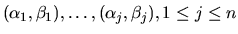
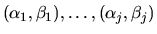

Next: Generalized (or Quotient) Singular
Up: Generalized Nonsymmetric Eigenproblems
Previous: Balancing
Contents
Index
The generalized Schur
form depends on the order of the eigenvalues on the
diagonal of (S,T) and this may optionally be chosen by the user. Suppose
the user chooses that
,
appear in the upper left corner of (S,T). Then the
first j columns of UQ and VZ span the left and right deflating
subspaces
of (A,B) corresponding to
.
The following routines perform this reordering
and also compute condition
numbers for eigenvalues, eigenvectors and deflating subspaces:
- 1.
- xTGEXC
will move an eigenvalue pair (or a pair of 2-by-2 blocks)
on the diagonal of the generalized Schur form (S,T)
from its
original position to any other position. It may be used to choose
the order in which eigenvalues appear in the generalized Schur
form. The reordering is performed with orthogonal (unitary)
transformation matrices. For more details see
[70,73].
- 2.
- xTGSYL
solves the generalized Sylvester equations
AR - LB = sC and DR - LE =sF for L and R, given A and B
upper (quasi-)triangular and D and E upper triangular. It
is also possible to solve a transposed system (conjugate transposed
system in the complex case)
AT X + DT Y = sC and
-X BT - Y ET = sF
for X and Y. The scaling factor s is set during the
computations to avoid overflow. Optionally, xTGSYL computes a
Frobenius norm-based estimate of the ``separation'' between the two
matrix pairs (A,B) and (D,E). xTGSYL is used by the routines
xTGSNA and xTGSEN, but it is also of independent interest.
For more details see [71,74,75].
- 3.
- xTGSNA
computes condition numbers of the
eigenvalues and/or left and right eigenvectors of a matrix pair
(S,T) in generalized Schur form.
These are the same as the
condition numbers of the eigenvalues and eigenvectors of the
original matrix pair (A,B), from which (S,T) is derived. The
user may compute these condition numbers for all eigenvalues and
associated eigenvectors, or for any selected subset. For more
details see section 4.11 and
[73].
- 4.
- xTGSEN
moves a selected subset of the eigenvalues of a matrix pair
(S,T) in generalized Schur form to the upper left corner of
(S,T), and optionally computes condition numbers
of their average value and their associated pair of (left
and right) deflating subspaces. These are the same as the condition
numbers of the average eigenvalue and the deflating subspace pair
of the original matrix pair (A,B), from which (S,T) is derived.
For more details see section 4.11 and
[73].
See Table 2.15 for a complete list of the routines, where,
to save space, the word ``generalized'' is omitted.
Table 2.15:
Computational routines for the generalized nonsymmetric eigenproblem
| Type of matrix |
Operation |
Single precision |
Double precision |
| and storage scheme |
|
real |
complex |
real |
complex |
| general |
Hessenberg reduction |
SGGHRD |
CGGHRD |
DGGHRD |
ZGGHRD |
| |
balancing |
SGGBAL |
CGGBAL |
DGGBAL |
ZGGBAL |
| |
back transforming |
SGGBAK |
CGGBAK |
DGGBAK |
ZGGBAK |
| Hessenberg |
Schur factorization |
SHGEQZ |
CHGEQZ |
DHGEQZ |
ZHGEQZ |
| (quasi)triangular |
eigenvectors |
STGEVC |
CTGEVC |
DTGEVC |
ZTGEVC |
| |
reordering |
STGEXC |
CTGEXC |
DTGEXC |
ZTGEXC |
| |
Schur decomposition |
|
|
|
|
| |
Sylvester equation |
STGSYL |
CTGSYL |
DTGSYL |
ZTGSYL |
| |
condition numbers of |
STGSNA |
CTGSNA |
DTGSNA |
ZTGSNA |
| |
eigenvalues/vectors |
|
|
|
|
| |
condition numbers of |
STGSEN |
CTGSEN |
DTGSEN |
ZTGSEN |
| |
eigenvalue cluster/ |
|
|
|
|
| |
deflating subspaces |
|
|
|
|
Next: Generalized (or Quotient) Singular
Up: Generalized Nonsymmetric Eigenproblems
Previous: Balancing
Contents
Index
Susan Blackford
1999-10-01